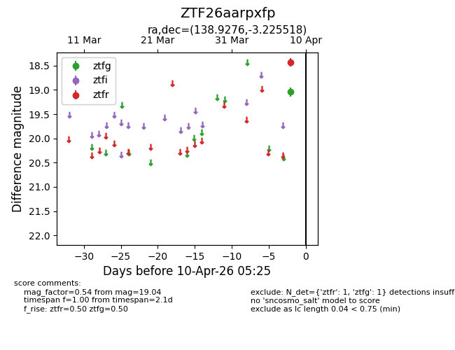
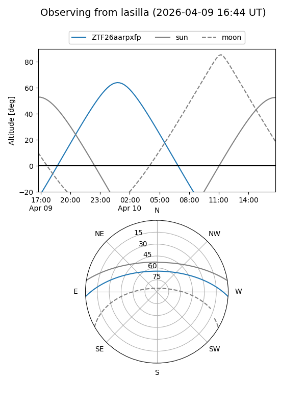
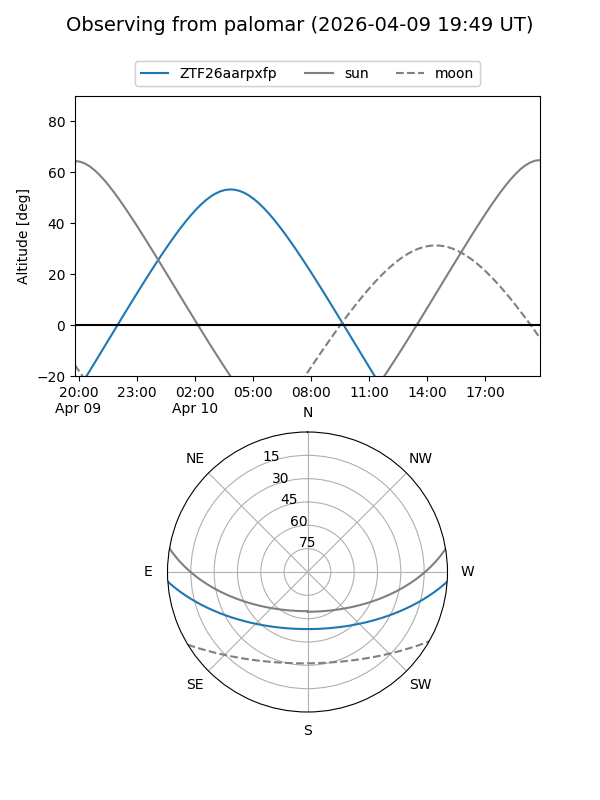

ZTF26aarpxfp
Target ZTF26aarpxfp at 2026-04-10 05:33
Aliases and brokers:
FINK: link
Lasair: link
ALeRCE: link
alt names
ZTF26aarpxfp (ztf,fink_ztf)
Coordinates:
equatorial (ra, dec) = 138.9276,-3.22552
equatorial (HMS+DMS) = 09:15:42.62,-03:13:31.86
galactic (l, b) = (234.4448,+29.83414)
Flags:
Photometry:
last ztfg=19.04, ztfr=18.43
1 ztfg, 1 ztfr detections
Lightcurve

Visibility


Additional plots